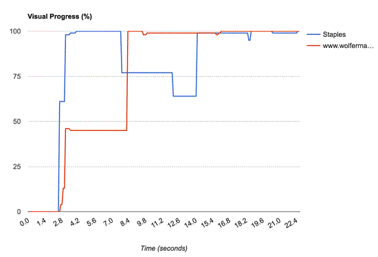

- Response to Input touch_app
- Animation & Scrolling directions_run
- Idle alarm
- Page Load cached
Estelle Weyl
Open Web Evangelist / Front End Engineer
Twitter: @webdevtips, @estellevw, @standardista
Blog: www.standardista.com
Objective Metrics:
Navigation Timing API

Active v. Passive Waiting
- 3.0s
- 4.0s
- 5.0s
- 6.0s
- 7.0s
- 8.0s

0%
56%
56%
67%
67%
100%
0%
56%
66%
66%
100%
User Experience > Developer Experience

Speed Index
Aggregate function on quickness of above-the-fold visual completion:
- 
 4,462
4,462 5,902
5,902

Measurement of visual progress in Speed Index
- Frame-by-frame VC progress is computed from pixel-histogram comparisons
Measurement of visual progress in Speed Index
- Frame-by-frame VC progress is computed from pixel-histogram comparisons
- Pixel-wise similarity (mean histogram difference a.k.a. MHD) doesn’t capture visual perception!
- Perception of Shape / Color / Object similarity
Pixel-wise similarity doesn’t capture shape similarity
Black/White = 50/50 MHD (Mean Histogram Difference) = 0


Pixel-wise similarity doesn’t capture color similarity

Proposal for a perceptually oriented visual QoE metric
- Update: Frame-by-frame VC progress computation using SSIM

Perceptual Speed Index
Frame-by-frame VC progress computation using SSIM
With Jitter

PSI v. SI
- SI and PSI: linearly correlated
- Visual jitter / layout thrashing? PSI > SI
- PSI appears higher when visual jitter exists (Pop-up ads / large lay-out changes / etc.)
- SSIM based visual progress measurements match human perception more closely than MHD
- SSIM / MHD swap doesn’t affect websites without visual jitter

Staples

Wolfermans

Hypothesis 1: Visual metrics will perform better than non-visual/network metrics

Not True
User Experience > Developer Experience